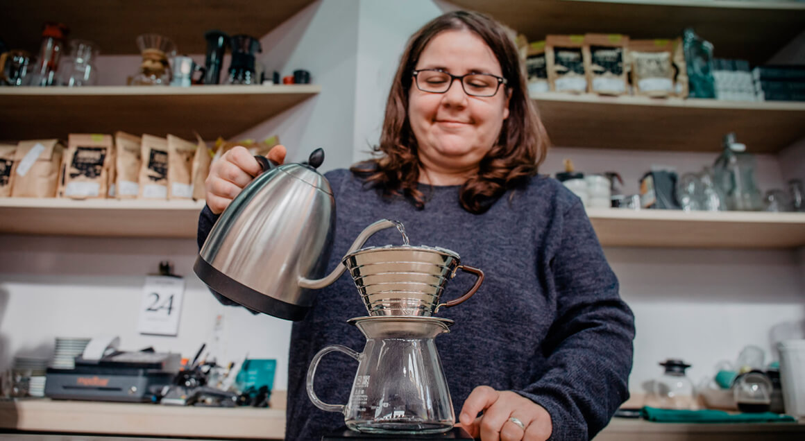

{% set title="Blog post" %}
{% set lang="en" %}

{% include 'parts/_head.html' %}

{% include 'parts/_header.html' %}
<main class="wrapper">

    <article class="blog">
        <h1 class="blog_h1">
            The Pros and Cons Experienced by Coffee Professionals
        </h1>
        <p class="blog_date">
            January 8, 2019
        </p>
            
    
        <p class="blog_paragraph1">
            Thinking back 15-20 years, I remember my parents going about their morning ritual of brewing coffee on weekends before burying their faces into a newspaper. It was probably how 90% of households in Germany brewed coffee at the time, using an old school batch coffee brewer. I’d watch them pour water in a jug, add ground coffee from the supermarket to a Melitta filter and push a button. Scales or thermometers to measure the precise amount of coffee or temperature of water were unheard of. And the result was, quite frankly, a bitter, dark brew that I’d avoid like the plague.
        </p>
        <p class="blog_paragraph2">
            Needless to say, filter coffee didn’t have the best reputation. It wasn’t until the third wave rediscovered pour over methods that had once before enjoyed popularity during the middle of the 20th century, that the perception of filter coffee changed for the better. I am talking about the Chemex, V60 and Kalita Wave. Especially at the beginning of the third wave this gear helped specialty coffee shops to visibly differentiate themselves from regular coffee shops. Until today, you’ll find either one of these and/or the Aeropress in the majority of specialty cafes. However, I’ve also witnessed more and more third wave coffee shops relying solely on batch brew, one example being Bonanza in Berlin Kreuzberg. Progress and innovation have slowly improved the negative perception of batch brewers. Prominent automated pour over systems are increasingly found in homes of coffee enthusiasts and in third wave cafés. This article is taking a closer look at this battle of man vs. machine. I talked to baristas and coffee shop owners to explore their reasons for preferring one over the other and put together lists of the pros and cons.
        </p>
        </article>
    
        <article class="blog1">
            <h2 class="blog1_h2">
                The Pour Over Enthusiasts
            </h2>
            <figure class="blog1_figure">
                
                <figcaption class="blog1_figure_figcaption">
                    Martina is running Retrogusto, a small take-away coffee place in the Mercado Central of Valencia. 
                </figcaption>
            </figure>
            <p class="blog1_paragraph3">
                Wattanaphon Khamson is a barista at Omnia Cafe in Chiang Mai. His main reason for preferring pour over rather than batch brew is that the manual brew allows him to experiment with brewing techniques and adjust quickly to the particular coffee beans he is brewing.  As an example, Wattanaphon seeks to improve the taste of every coffee by adjusting the ratio of the coffee and water during the blooming stage and the amount of seconds he allows for blooming. While it is mostly possible to adjust the settings of the batch brewer to do the same and to save different profiles for different kinds of coffee (depends on the kind of batch brewer of course), he finds it easier to experiment manually. In the Asian countries where I’ve researched the coffee scene - Thailand, Taiwan and Japan - batch brew is almost unheard of and especially in Japan and Taiwan pour-overs are incredibly popular. 
            </p>
        
            <p class="blog1_paragraph4">
                Here’s what other coffee professionals thought:
            </p>
    
            <ul class="blog1_lists">
                <li class="blog1_lists_list">
                    <h3 class="blog1_lists_list_h3">
                        The Pros
                    </h3>
                    <p class="blog1_lists_list_text">
                        By manually brewing coffee the barista can create an experience for customers. Apart from the actual taste of the coffee, the human element can be a decisive factor when it’s about whether a customer 
                    </p>
                    <p class="blog1_lists_list_text">
                        The manual brew allows the barista to control and adjust every valuable of the brewing process in the moment.
                    </p>
                    <p class="blog1_lists_list_text">
                        When time allows, the barista can customize the brewing depending on the preference of the customer.
                    </p>
                </li>
                <li class="blog1_lists_list">
                    <h3 class="blog1_lists_list_h3">
                        The Cons
                    </h3>
                    <p class="blog1_lists_list_text">
                        When a café is crowded and there is a number of people ordering pour-overs manual brews can become very time consuming and increase waiting times for customers.
                    </p>
                    <p class="blog1_lists_list_text">
                        Consistency is a challenge, especially during rush hours when the barista doesn’t have enough time to give your brew the attention it 
                    </p>
                    <p class="blog1_lists_list_text">
                        While baristas put more effort and time into manually brewing coffee for their customers, many customers might not actually taste the difference between a manual brew and an automated brew.
                    </p>
                    
                </li>
    
            </ul>
        </article>
       
    <aricle class="blog2">
            <h2 class="blog2_h2"></h2>
            <figure class="blog2_figure">
             
            <figcaption class="blog1_figure_figcaption"></figcaption>
    <P class="blog2_paragraph1"></P>
    <p class="blog2_paragraph3"></p>
    
    <ul class="blog2_lists">
        <li class="blog2_lists_list">
            <h3 class="blog2_lists_list_h3"></h3>
            <p class="blog2_lists_list_text"></p>
            <p class="blog2_lists_list_text"></p>
            <p class="blog2_lists_list_text"></p>
        </li>
        <li class="blog2_lists_list">
            <h3 class="blog2_lists_list_h3"></h3>
            <p class="blog2_lists_list_text"></p>
            <p class="blog2_lists_list_text"></p>
            <p class="blog2_lists_list_text"></p>
            <p class="blog2_lists_list_text"></p>
            
            
        </li>
    
    </ul>
    <p class="blog2_text"></p>
    
    </aricle>
        
    
</main>


    


{% include 'parts/_foot.html' %}